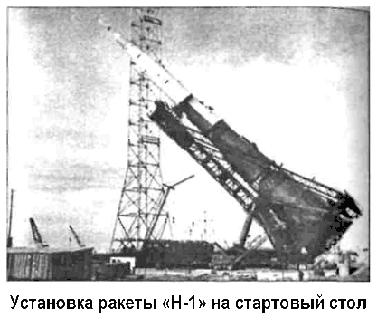
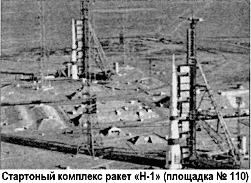

Ракета-носитель «Н-1»: история катастроф
Место Королева на посту руководителя ОКБ-1 (с 1966 года — Центральное конструкторское бюро экспериментального машиностроения, ЦКБЭМ) занял Василий Мишин. К сожалению, этот замечательный конструктор не обладал тем упорством, которое позволяло Королеву реализовывать свои устремления. Многие до сих пор полагают, что именно преждевременная смерть Королева и «мягкотелость» Мишина стали основной причиной краха проекта ракеты «Н-1» и, как следствие, советской лунной программы. Это наивное заблуждение.
Потому что чудес не бывает: еще на стадии проектирования в конструкции ракеты «Н-1» появилось несколько ошибочных решений, которые и привели к катастрофе.
Но обо всем по порядку.
В феврале 1966 года на Байконуре завершилось строительство стартового комплекса (площадка № 110), но ему еще долго предстояло ждать своей ракеты.
Первая «Н-1» появилась на космодроме только 7 мая 1968 года. Там же, на Байконуре, прошли динамические испытания, технологические отработки процесса сборки, примерки носителя на стартовом комплексе. Для этого послужили два экземпляра ракеты «Н-1», известные под обозначениями «1Л» и «2Л». Им не суждено было взлететь, да и не для полетов они создавались.
В конечном варианте ракета «Н-1» («11А52») имела следующие характеристики. Габариты: общая длина (с космическим аппаратом) — 105,3 метра, максимальный диаметр по корпусу — 17 метров, стартовая масса — 2750–2820 тонн, стартовая тяга — 4590 тонн.
«Н-1» была выполнена с поперечным делением ступеней. 1-я ступень (блок «А») имела 30 однокамерных основных ЖРД «НК-15», 6 из которых размещались по центру, 24 — по периферии, и 6 рулевых сопел управления по крену. РН могла совершать полет при двух отключенных парах противоположно расположенных периферийных ЖРД блока «А». 2-я ступень (блок «Б») имела 8 однокамерных основных ЖРД «НК-15В» с высотными соплами и 4 рулевых сопла управления по крену. РН могла совершать полет с одной от ключенной парой ЖРД блока «Б». 3-я ступень (блок «В») имела 4 однокамерных основных ЖРД «НК-19» и 4 рулевых сопла управления по крену и могла совершать полет при одном отключенном ЖРД.
Все двигатели были разработаны в Куйбышевском авиационном КБ (ныне — Самарское НПО «Труд») под руководством Главного конструктора Николая Кузнецова. В качестве горючего использовался керосин, в качестве окислителя — жидкий кислород.
Ракета-носитель оснащалась системой координации од новременной работы двигателей «КОРД», которая в случае необходимости отключала неисправные двигатели.
Стартовый комплекс состоял из двух пусковых установок с 145-метровыми башнями обслуживания, через которые производилась заправка РН, ее термостатирование и электропитание.
Через эти башни экипаж должен был садиться в корабль. После окончания заправки РН и посадки экипажа башня обслуживания отводилась в сторону, и ракета оставалась на стартовом столе, удерживаемая за днище 48 пневмомеханическими замками.
Вокруг каждой пусковой установки размещались четыре молниеотвода (дивертора) высотой 180 метров. Для отвода газов при запуске двигателей первой ступени были сделаны три бетонных канала. Всего на площадке № 110 построили более 90 сооружений.

Кроме того, на площадке № 112 возвели монтажно-испытательный корпус ракеты-носителя, куда РН прибывала по железной дороге в разобранном состоянии и монтировалась в горизонтальном положении.
Космический корабль проходил предполетные проверки и монтировался с другими блоками «ЛРК» в монтажно-испытательном корпусе космических объектов на площадке № 2Б. После этого он закрывался обтекателем и по железной дороге отправлялся на заправочную станцию на площадку № 112А, где производилась заправка его двигателей. Затем заправленный «ЛРК» перевозился к ракете и монтировался на третьей ступени РН, после чего весь комплекс вывозился на стартовую позицию.
Первое летно-конструкторское испытание ракеты «Н-1», проходившей под обозначением «ЗЛ», состоялось 21 февраля 1969 года. В составе лунного ракетного комплекса во время первого пуска вместо «ЛОК» и «ЛК» был установлен автоматический корабль «7К-Л1С» («11Ф92»), внешне напоминающий «7К-Л1», но оснащенный многими системами корабля «Л-3» и мощной фотоаппаратурой. Ведущим конструктором изделия «11Ф92» был Владимир Бугров. В случае успешного запуска, корабль «7Л-Л1С» должен был выйти на орбиту Луны, произвести ее качественную фотосъемку и доставить пленки на Землю.
Борис Черток в своих мемуарах описывает момент старта так:
«В 12 часов 18 минут 07 секунд ракета вздрогнула и начала подъем. Рев проникал в подземелье через многометровую толщу бетона. На первых секундах полета последовал доклад телеметристов о выключении двух двигателей из тридцати.
Наблюдатели, которым невзирая на строгий режим безопасности удалось следить за полетом с поверхности, рассказывали, что факел казался непривычно жестким, «не трепыхался», а по длине раза в три-четыре превосходил протяженность корпуса ракеты.
Через десяток секунд грохот двигателей удалился. В зале стало совсем тихо. Началась вторая минута полета И вдруг — факел погас…
Это была 69-я секунда полета. Горящая ракета удалялась без факела двигателей. Под небольшим углом к горизонту она еще двигалась вверх, потом наклонилась и, оставляя дымный шлейф, не разваливаясь, начала падать.

Не страх и не досаду, а некую сложную смесь сильнейшей внутренней боли и чувства абсолютной беспомощности испытываешь, наблюдая за приближающейся к земле аварийной ракетой. На ваших глазах погибает творение которым за несколько лет вы соединились настолько, что иногда казалось — в этом неодушевленном «изделии» есть душа. Даже теперь мне кажется, что в каждой погибшей ракете должна была быть душа, собранная из чувств и переживаний сотен создателей этого «изделия».
Первая летная упала по трассе полета в 52 километрах от стартовой позиции.
Далекая вспышка подтвердила: все кончено!..»
Последующее расследование показало, что с 3-й по 10-ю секунды полета система контроля параметров работы двигателей «КОРД» ошибочно отключила 12-й и 24-й двигатели блока «А», но ракета-носитель продолжила полет с двумя отключенными двигателями. На 66-й секунде из-за сильной вибрации оборвался трубопровод окислителя одного из двигателей.
В кислородной среде начался пожар. Ракета могла бы продолжить полет, но на 70-й секунде полета, когда ракета достигла высоты 14 километров, система «КОРД» отключила сразу все двигатели блока «А», и «Н-1» упала в степь.
По результатам анализа причин аварии было принято решение ввести фреоновую систему пожаротушения с форсункойраспылителем над каждым двигателем.
Второе испытание «Н-1» («5Л») с автоматическим кораблем «11Ф92» и макетом «ЛК» («11Ф94») состоялось 3 июля 1969 года. Это был первый ночной старт «Н-1».
В 23.18 ракета оторвалась от стартового стола, но, когда поднялась немного выше молниеотводов (через 0,4 секунды после прохождения команды «контакт подъема»), взорвался восьмой двигатель блока «А». При взрыве была повреждена кабельная сеть и соседние двигатели, возник пожар.
Подъем резко замедлился, ракета начала наклоняться и на 18-й секунде полета упала на стартовый стол. От взрыва разрушился стартовый комплекс и все шесть подземных этажей стартового сооружения. Один из молниеотводов упал, свернувшись спиралью. 145-метровая башня обслуживания сдвинулась с рельсов.
Система аварийного спасения сработала надежно, и спускаемый аппарат автоматического корабля «11Ф92» приземлился в двух километрах от стартовой позиции.
Космонавт Анатолий Воронов вспоминает, что в тот раз при подготовке к запуску присутствовали космонавты. Они поднимались на самый верх 105-метровой ракеты, осматривали и изучали лунный ракетный комплекс. Поздно вечером они наблюдали за стартом из гостиницы космонавтов: «Вдруг вспыхнуло, мы успели сбежать вниз, и в это время ударной волной выбило все стекла. После падения ракета взорвалась прямо на стартовой площадке…»
Причиной взрыва явилось попадание постороннего предмета в кислородный насос двигателя № 8 за 0,25 секунды до подъема. Это повлекло взрыв насоса, а затем и самого двигателя. После установки фильтров такое не должно было повториться. На доработку и испытания двигателей КБ Кузнецова потребовалось почти два года Двух катастроф «Н-1» по вине низкой надежности первой ступени было вполне достаточно, чтобы заговорить о необходимости изменений в процессе подготовки ракеты к старту. Конструкторам ЦКБЭМ пришлось признать, что стратегия отработки надежности выбрана неправильно.
Большая ракетно-космическая система должна выполнять свою основную задачу с первой же попытки. Для этого все, что только можно испытать, должно быть испытано на Земле, до первого целевого полета. Сама система должна строиться на основе многоразовости действия и больших запасов по ресурсу.
Однако создавать полномасштабный стенд для отработки первой ступени было уже поздно. Поэтому ограничились введением дополнительных устройств безопасности.
Третий пуск «Н-1» («6Л») был осуществлен с уцелевшего стартового комплекса 27 июня 1971 года. В качестве полезной нагрузки был установлен лунный ракетный комплекс с Макетами «ЛОК» и «ЛК». В 2.15 РН оторвалась от стартового стола и начала подъем. На этот раз в программе полета был предусмотрен маневр увода носителя от стартового комплекса.
После его выполнения из-за возникновения неучтенных газодинамических моментов в донной части ракета стала поворачиваться по крену с постоянным нарастанием вращающего момента. Через 4,5 секунды угол поворота составил 14° через 48 секунд — около 200° и продолжал увеличиваться.
От больших перегрузок при вращении на 49-й секунде полета начал разрушаться блок «Б» и от комплекса оторвался головной блок вместе с третьей ступенью, которые упали в семи километрах от стартового комплекса. 1-я и 2-я ступени продолжили полет. На 51-й секунде «КОРД» отключила все двигатели блока «А», ракета упала в двадцати километрах и взорвалась, образовав воронку 15-метровой глубины.
Борис Черток описывал ситуацию с катастрофой «6Л» так: «…Огневые струи 30 двигателей складывались в общий огневой факел так, что вокруг продольной оси ракеты создавался непредвиденный теоретиками и никакими расчетами возмущающий крутящий момент. Органы управления были не в силах справиться с этим возмущением, и ракета № 6Л потеряла устойчивость». И далее: «Истинный возмущающий момент удалось определить моделированием с помощью электронных машин. При этом в качестве исходных данных закладывались не расчеты газодинамиков, а данные телеметрических измерений, реально полученные в полете».
В результате было показано, что «фактический возмущающий момент в несколько раз превышает максимально возможный управляющий момент, который развивали по крену управляющие сопла при их предельном отклонении».
По итогам работы комиссии, расследовавшей причину аварии, было принято решение вместо шести рулевых сопел установить четыре рулевых двигателя тягой по 6 тонн на первой и второй ступенях.
Последнее испытание ракеты-носителя «Н-1» («7Л») со штатным «ЛОК» и «ЛК», выполненным в беспилотном варианте, было проведено 23 ноября 1972 года. Старт состоялся в 9.11. На 90-й секунде полета в соответствии с программой за 3 секунды до отделения 1-й ступени двигатели начали переходить на режим конечной тяги. Были отключены шесть центральных ЖРД, отработавшие расчетное время. Скорость подъема резко снизилась. От этого возник непредвиденный гидравлический удар, в результате чего ЖРД № 4 вошел в резонанс, от которого разрушились топливные трубопроводы, и начался пожар. Ракета взорвалась на 107-й секунде.
Невзирая на то, что ни одной ракете «Н-1» так и не удалось выполнить программу запуска, конструкторы продолжали работу над ней. Следующий, пятый, старт был запланирован на август 1974 года, но не состоялся. В мае 1974 года советская лунная программа была закрыта, а все работы над «Н-1» прекращены. Две готовые к пускам ракеты «8Л» и «9Л» были уничтожены.
От «Н-1» удалось сохранить только 150 двигателей типа «НК», изготовленных для различных ступеней ракеты. Николай Кузнецов, несмотря на распоряжение правительства, законсервировал их и хранил долгие годы. Как показало время, делал он это не зря. В 90-е годы они были приобретены американцами и использовались на ракетах «Атлас-2АР» («Atlas-2AR»)…